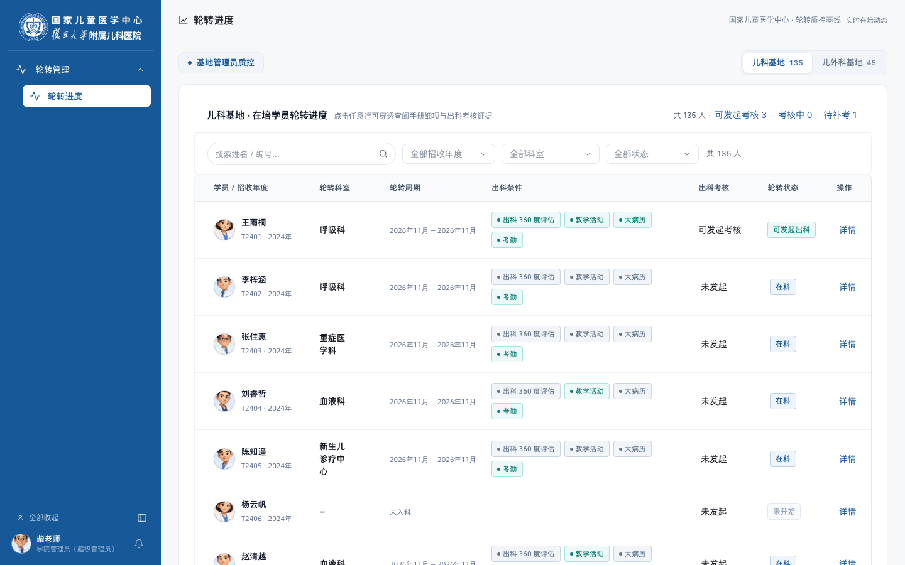
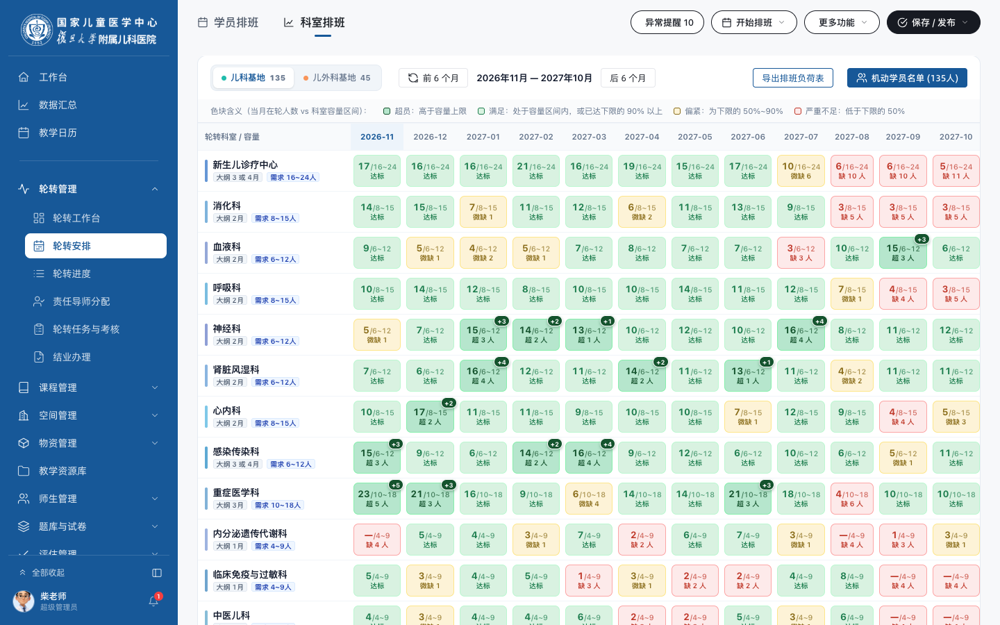

修改记录总清单（索引）
记录总数：2 项
| 序号 | 模块与改动主题（点击跳转） | 端别 | 定位 / 触发路径 | 涉及文件与留痕形式 |
|---|---|---|---|---|
| 01 | 轮转进度 · 筛选栏对齐技能中心课程胶囊样式与 3D 卡通头像升级 | PC端 | 管理端 → 轮转管理 → 轮转进度（pages/轮转进度/index.html） |
pages/轮转进度/page.js + pages/轮转进度/page.css · 图文对比（2 张） |
| 02 | 轮转安排 · 顶部视图页签文案「学员层级 / 科室层级」调整为「学员排班 / 科室排班」 | PC端 | 管理端 → 轮转管理 → 轮转安排（manager.html?page=轮转安排） |
page.js、verify-swap-dispatch.cjs · 图文对比（2 张） |
01 · 轮转进度 · 筛选栏对齐技能中心课程胶囊样式与 3D 卡通头像升级
定位：管理端 → 轮转管理 → 轮转进度（pages/轮转进度/index.html）。实现文件：pages/轮转进度/page.js、pages/轮转进度/page.css。
修改前 · 存在问题
- 筛选栏仍采用「招收年度：」「科室：」「状态：」文字前缀 + 小号方角下拉框，搜索框置于最右侧且宽度较窄，与「技能中心课程」的千问胶囊筛选栏样式不统一。
- 学员列表头像仅显示单色圆角方框与姓氏首字，缺少 3D 卡通人物头像视觉质感。

修改后 · 改动说明
- 搜索与筛选项对齐「技能中心课程」胶囊几何：搜索框居左（
300px宽、36px高、999px圆角、0.5px solid #e1e6ef边框），后接无前缀标签的胶囊下拉筛选（全部招收年度、全部科室、全部状态），右侧附带共 X 人统计与激活筛选时的重置按钮。 - 学员头像升级为 3D 卡通头像（按姓名稳定映射
shared/assets/avatars/avatar_01.png~avatar_10.png，34px圆形描边容器），并保留首字母色块作为加载兜底。

02 · 轮转安排 · 顶部视图页签文案调整为「学员排班 / 科室排班」
定位：管理端 → 轮转管理 → 轮转安排（manager.html?page=轮转安排）。实现文件：pages/轮转安排/page.js、scripts/verify-swap-dispatch.cjs。
修改后 · 改动说明
- 将
viewTabs中两个页签文案分别调整为「学员排班」与「科室排班」，更贴合排班业务场景。 - 同步更新自动化校验脚本
scripts/verify-swap-dispatch.cjs中的页签匹配文本为「科室排班」。
